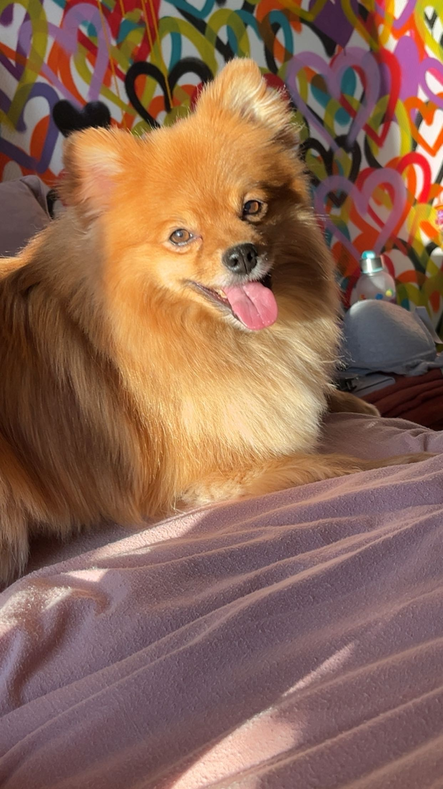
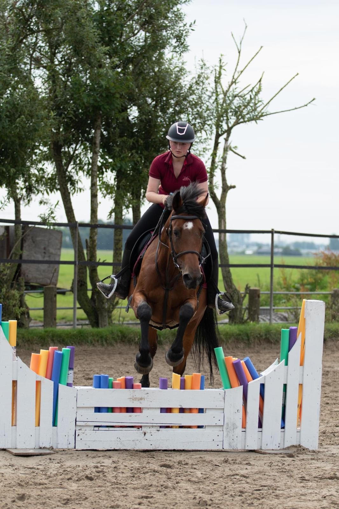

Ik ben Valentina Boon, ben 16 jaar. Thuis woon ik met mijn moeder, stiefvader, broertje en halfzusje. En bij mijn vader woon ik met mijn vader en broertje. Mijn broertje, Million, is 12 jaar en zit op dit moment in de brugklas. Mijn halfzusje, Buena, is nu 1 jaar. Ik scheel erg veel met haar. Wat juist erg bijzonder is, ik kan nu namelijk heel bewust zien opgroeien, wat ik bij mijn broertje niet kon, doordat ik zelf pa 4 jaar was. Buiten een broertje en een halfzusje heb ik ook nog een hond, Simba. Simba is een keeshond en ik heb hem nu bijna 5 jaar.
Ik zit nu in 5VWO en doe de richting Natuur en Gezondheid. Na de middelbare school wil ik graag geneeskunde gaan studeren. Om vervolgens kinderarts te worden. Dit jaar is mijn broertje naar de eerste klas gegaan, op de zelfde school als mij. Het is erg apart om na 4 jaar weer met mijn broertje op dezelfde school te zitten en hem dan ook rond te zien lopen op school.
In mijn vrije tijd vind ik het leuk om te gaan paardrijden, met mijn beste vriendin af te spreken of om gewoon lekker chill een film of serie te kijken. Ik doe nu 9 jaar aan paardrijden en doe dat nogsteeds op dezelfde stal als waar ik ben begonnen. Ik heb nu sinds een paar maanden een verzorgpaard, waar ik echt met plezier heen ga. Ik vind het erg jammer dat ik vanwege school en werk niet meer tijd heb om naar hem toe te gaan.
